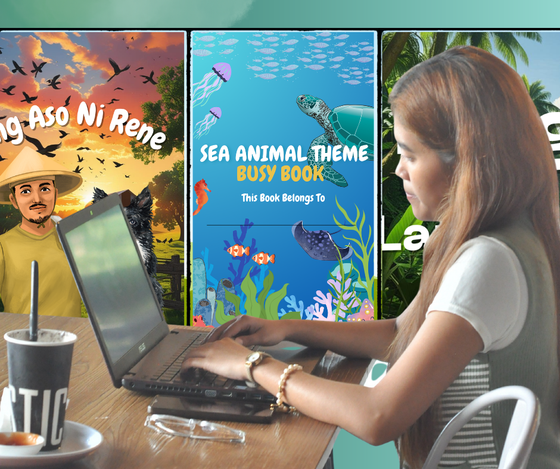
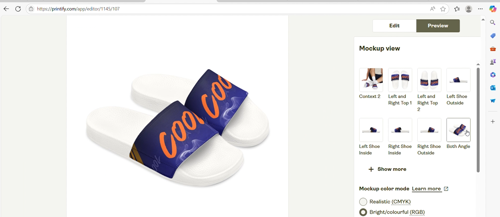

Elementary
Portugal Chavez Elementary School
Where curiosity and a love for learning began.
Find a creative
Graphic designer · Creative learner
I’m Mary Ann San Antonio.
I create warm, thoughtful visuals and digital experiences that turn everyday ideas into memorable work.

I’m Mary Ann, a hardworking creative who strives for excellence in everything I do. I enjoy exploring design, learning new tools, and creating work that feels useful, clear, and human.
This portfolio follows my growth across graphic design, content creation, photography, and web development.
My journey
Each stage has shaped how I learn, collaborate, and approach creative challenges.
Elementary
Where curiosity and a love for learning began.
High school
A formative chapter for skills, confidence, and teamwork.
College · Current
Building creative and technical skills for future opportunities.
Capabilities
A blend of creative instincts, content skills, and practical development foundations.
Creative toolkit
Digital toolkit
Selected work
A collection of playful learning materials, visual experiments, and design process work.

Canva · Graphic design
An engaging activity-book concept shaped with colorful, child-friendly visual elements.

Layout · Learning materials
A set of friendly educational layouts designed to make practice feel inviting and fun.

Process · Product design
A walkthrough showing how a digital Canva design moves toward a print-ready product.
Let’s connect
I’d love to hear about design opportunities, collaborations, or projects where thoughtful visuals can make a difference.
Start a conversation